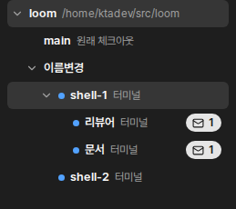
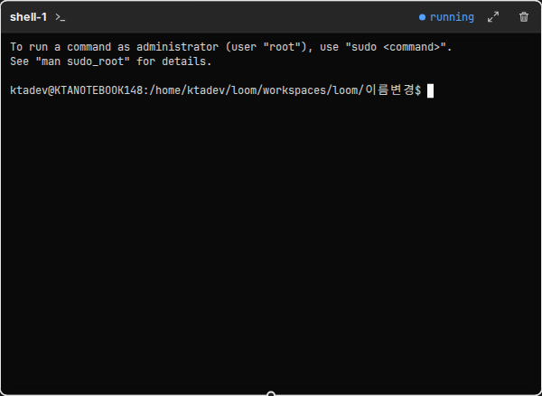
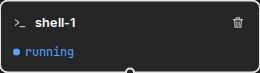

사람 요청: “노드 이름 변경기능 추가해줘 더블클릭으로 편집가능한 상태가 되도록 만들어라 (사이드탭, 노드 모두)”. 사이드바 트리 줄, 표준 카드 머리, 심플 카드(오른쪽 칸 머리도 같은 부품)의 이름 글자를 더블클릭하면 그 자리가 입력창이 된다. Enter는 저장, Esc는 취소다.



이름 글자만 더블클릭 대상이다. 머리의 다른 곳을 더블클릭하면 지금처럼 확대한다. 카드에 포커스가 있을 때 F2도 편집을 연다.
두 곳은 같은 부품(노드 정보)이라 함께 바뀐다.
| 상황 | 보이는 문장 | 비고 |
|---|---|---|
| 부모·조부모·형제·자식·손자 가운데 같은 이름이 있다 | 「{이름}: 부모·형제·자식 노드가 이미 쓰는 이름입니다. 다른 이름을 입력하십시오.」 | 있는 거절(nameTaken)의 문장을 넓힌다. 자식을 만들 때와 같은 규칙을 이름을 바꾼 노드의 양쪽 관계에 쓴다 |
| 부모 없는 노드끼리 같은 이름이다 | 위와 같다 | 부모 없는 노드는 서로 형제로 본다(shell-1·shell-2 번호 규칙과 같다) |
| 앞뒤 빈칸을 뺀 이름이 비었다 | 「이름을 입력하십시오.」 | 있는 거절(emptyName) |
#으로 시작한다 | 「{이름}: #으로 시작하는 이름은 노드 번호 표기에 씁니다. #을 빼십시오.」 | 새 거절 reservedName. 지금은 nameTaken으로 “이미 쓰는 이름”이라고 잘못 말한다. 자식 만들기도 이 거절을 함께 쓴다 |
| 이름이 그대로다 | (없음) | 요청 없이 편집을 닫는다 |
끝난 노드(done·exited)도 이름을 바꿀 수 있다. 저장하는 동안 입력창은 읽기 전용이다. 입력창 밖을 누르면 취소한다(Esc와 같다). 바꾸지 않은 이름을 잃지 않는다.
이벤트 콘솔에 한 줄을 남긴다. 옛 이름으로 남은 기록과 새 이름을 잇는다.
부모와 자식이 옛 이름으로 보내면 메시지가 보관함에 갇힌다. 그래서 도는 부모와 자식의 메일함에 아래 한 줄을 큐로 넣는다(에이전트가 읽는 글이라 영어다). 이름을 바꾼 노드 자신은 이름이 아니라 토큰으로 자기를 찾으므로 영향이 없다. 지시문에 적힌 옛 이름은 고치지 않는다.
renamed: shell-1 -> 코디 (#1). Address it as 코디 or '#1'.